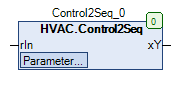

Control2Seq (FB)¶
FUNCTION_BLOCK Control2Seq
Kurzbeschreibung¶
Sequenzsteuerung mit Einschalt- / Ausschaltschwelle für ein analoges EingangssignalDer Wirksinn ( invertiert / direkt ) ist ebenfalls einstellbar.
Darstellung¶

Schnittstellen¶
Eingänge¶
Name Datentyp Wertebereich Initialwert Funktion rIn REAL Analoger Eingangswert
Ausgänge¶
Name Datentyp Wertebereich Initialwert Funktion xY BOOL Binäres Ausgangssignal
Sollwerte / Parameter¶
Name Datentyp Wertebereich Initialwert Funktion rSwitchOffPoint REAL 3.0 Ausschaltschwelle rSwitchOnPoint REAL 7.0 Einschaltschwelle eAction eControlMode eControlMode.Direct Wirksinnn der Sequenzsteuerung ( Invertiert = Heizen, Direkt = Kühlen )
Funktionsbeschreibung¶
Digital-Ausgang xY¶
Der digitale Ausgang xY wird durch den Wirksinn eAction, den analogen Eingangswert rIn und die beiden Schaltschwellen rSwitchOffPoint und rSwitchOnPoint beeinflusst.
Ist der Wirksinn eControlMode.Direct ausgewählt, so muß die Einschaltschwelle rSwitchOnPoint größer als die Ausschaltschwelle rSwitchOffPoint sein.
Ist der Wirksinn eControlMode.Inverted ausgewählt, so muß die Einschaltschwelle rSwitchOnPoint kleiner als die Ausschaltschwelle rSwitchOffPoint sein.
eAction rIn xY Hinweise eControlMode.Direct rIn < rSwitchOnPoint und rIn* > rSwitchOffPoint unverändert Wirksinn = Direkt: Istwert überschreitet keine Schwellwerte eControlMode.Inverted rIn > rSwitchOnPoint und rIn* < rSwitchOffPoint unverändert Wirksinn = Invertiert: Istwert überschreitet keine Schwellwerte eControlMode.Direct rIn >= rSwitchOnPoint TRUE Wirksinn = Direkt: Istwert überschreitet Einschaltschwelle eControlMode.Direct rIn <= rSwitchOffPoint FALSE Wirksinn = Direkt: Istwert unterschreitet Ausschaltschwelle eControlMode.Inverted rIn <= rSwitchOnPoint TRUE Wirksinn = Invertiert: Istwert unterschreitet Einschaltschwelle eControlMode.Inverted rIn >= rSwitchOffPoint FALSE Wirksinn = Invertiert: Istwert überschreitet Ausschaltschwelle
Visualisierung¶
Codesys¶
- InOut:
Scope Name Type Initial Comment Input rIn REAL Analoger Eingangswert rSwitchOffPoint REAL 2 Ausschaltschwelle rSwitchOnPoint REAL 6 Einschaltschwelle eAction eControlMode eControlMode.Direct Wirksinnn der Sequenzsteuerung ( Invertiert = Heizen, Direkt = Kühlen ) Output xY BOOL Binäres Ausgangssignal